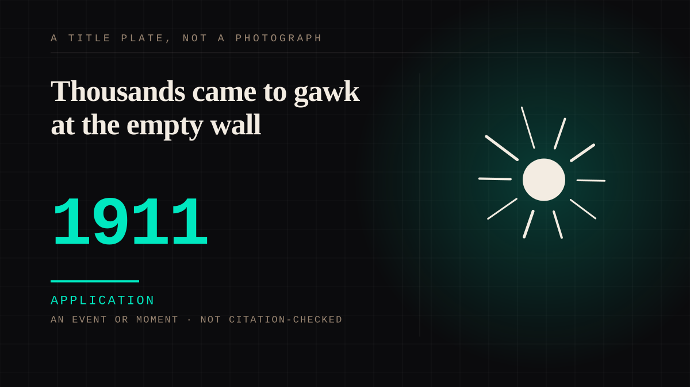

An event or moment · 1911 · Press
Thousands came to gawk at the empty wall
An Italian workman walked out of the Louvre with the painting under his coat, and the wall it had hung on went on drawing a crowd: four iron hooks, no picture, and thousands of people come to look at the hooks anyway. The papers printed the absence, and when she came back she had become public property - the first mass art icon, made by a thief rather than by a painter.

A crowd stood in front of an empty wall, and that is the whole entry. The four hooks were still there and people came to look at them - "thousands of people came to gawk at the empty wall where the painting had once hung". L'Illustration printed the question the absence had raised for it: "What audacious criminal, what mystifier, what maniac collector, what insane lover, has committed this abduction?" A picture nobody could see was being discussed in the language reserved for a kidnapping, which is the correct language for the situation and is also the first time in this corpus that a crowd's attention is described as a taking rather than as a looking.
The scale is recorded twice and the two records do not agree. One has "more than 100,000 people viewed it" after the return; the other has "at least 120,000 people went to see the painting in the first two days after it was returned". Both are kept, because the disagreement is the evidence - numbers that size are what a public looks like once an object has become a story. The record also disagrees about the theft itself: one man, or three. That disagreement is kept too, and neither version changes a word of the entry, which is about the wall rather than about who carried her out of it.
What the theft produced is the sentence worth having. As the account the entry leans on puts it, "The Mona Lisa had left the Louvre a work of art. She returned as public property, the first mass art icon." Satirical postcards, a short film and cabaret songs followed, and "popular culture seized upon the theft and turned high art into mass art." The image went on doing the work the canvas used to do, and the canvas came back as something people queued to be near.
Peruggia is the one attachment in the record that answers itself. He said he had fallen "a victim to her smile" and feasted his eyes on his treasure every evening, which is a one-sided tie describing itself out loud and in a courtroom's vocabulary. The crowd had the same tie and no sentence for it, which is what the queue in front of the hooks was. She was not there for either of them, and being not-there is the whole of the arrangement.
Application. One-sided attachment put to work on purpose. Creator economies, community, fandom as infrastructure, and the things that genuinely help people. Not automatically good - a tool with an obvious use is a tool that will also get a bad one.
Where it sits
1900 1900-1949 · 1911 1949
Provenance · 3 source record(s)
- unverifiedThe entry's spine, and the source of its title. That "The Mona Lisa is gone"; that "thousands of people came to gawk at the empty wall where the painting had once hung"; the question L'Illustration printed, "What audacious criminal, what mystifier, what maniac collector, what insane lover, has committed this abduction?"; Peruggia, "I fell a victim to her smile and feasted my eyes on my treasure every evening"; the article's own summary, "The Mona Lisa had left the Louvre a work of art. She returned as public property, the first mass art icon."; and "At least 120,000 people went to see the painting in the first two days after it was returned". Also the account of the theft and of the recovery, which is what the entry's year rests on. Read through a search index rather than fetched, so the record is unverified: a reader can open this page, this agent did not.History.com, "The Heist That Made the Mona Lisa Famous" ↗
- unverifiedThe thieves, the wall, and the mass image - and the count that disagrees with the record above. That "Vincenzo Perugia and the brothers Lancelotti, Vincenzo and Michele, young Italian handymen" took her, which is the three-man version the entry keeps beside the one-man version; the "empty wall with its four lonely iron hooks"; that satirical postcards, a short film and cabaret songs followed, and that "popular culture seized upon the theft and turned high art into mass art"; and "more than 100,000 people viewed it". Read through a search index rather than fetched, so the record is unverified: a reader can open this page, this agent did not.Smithsonian Magazine, "What Happened When the Mona Lisa Was Stolen" ↗
- unverifiedThe dating and the caveat the entry depends on. "It was 24 hours before anyone noticed she was missing."; and "the Mona Lisa certainly wasn't universally known in 1911", which is why the theft rather than the painting made her famous. Read through a search index rather than fetched, so the record is unverified: a reader can open this page, this agent did not.The Guardian, 5 August 2011 - report on the centenary of the 1911 theft of the Mona Lisa from the Louvre ↗
Connected · 2 out, 2 in
It sits in
The full timeline → · The database → · See it in the atlas →